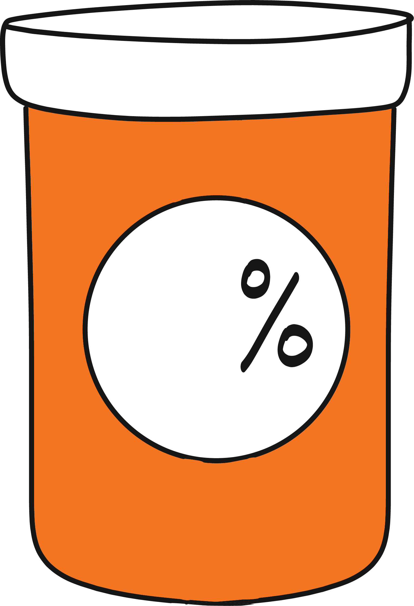

Refill Information

% of patients with your surgery needed a refill on their prescriptions.
Pain Scale
Important
- Use the medication only as prescribed. Take with food.
- Do not drive or use any type of heavy machinery, drink alcohol, make any life-changing decisions (i.e. sign a will) or participate in activities that require a lot of physical skill, as narcotics may change your mental acuity.
- On rare occasions these medications may cause confusion or disorientation, and we advise you to discontinue these medications should these occur.
Here contains general information